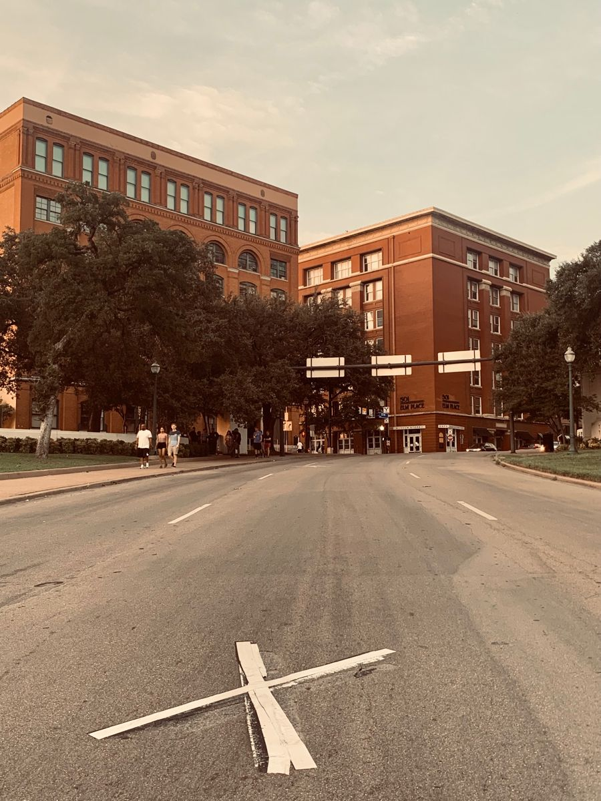
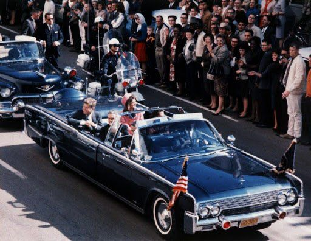
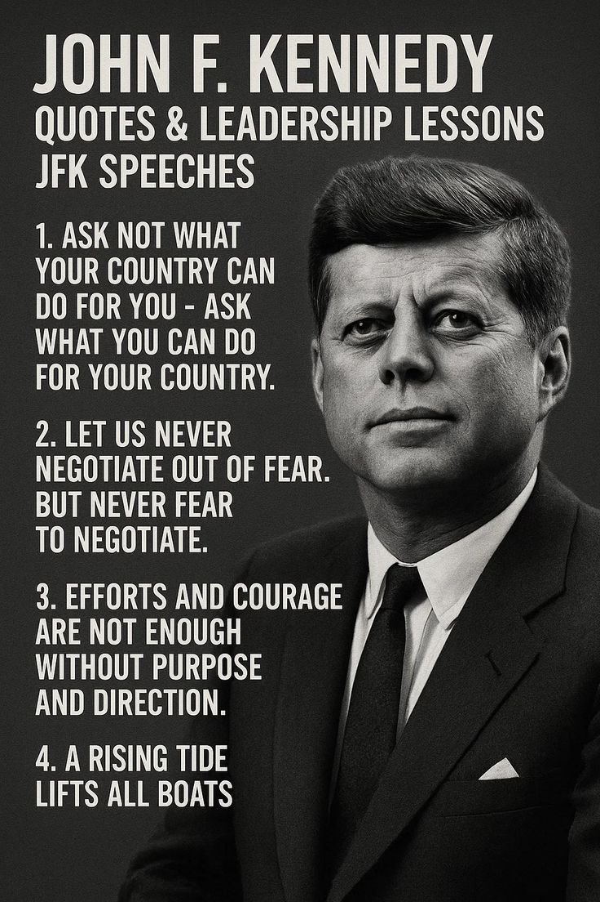

John F. Kennedy Assassination in Dallas
Dealey Plaza
🏛️ The assassination of President John F. Kennedy occurred on November 22, 1963 in Dealey Plaza, located in downtown Dallas. This historic location has since become one of the most significant and studied sites in American history, drawing visitors, historians, and researchers from around the world.

The Event
🚗 As the presidential motorcade carrying John F. Kennedy passed through downtown Dallas, shots were fired that shocked the nation and changed American history forever. The event unfolded in seconds but left a lasting impact on the United States and the world.

Legacy
📚 The assassination of John F. Kennedy remains one of the most analyzed and discussed events in modern history. It led to major investigations, historical debates, and continues to be studied in politics, history, and culture classes worldwide.
